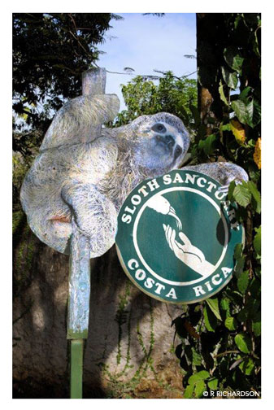

The Sloth Sanctuary in Costa Rica
The Sloth Sanctuary is dedicated to the rescue, rehabilitation, release and research of sloths and conserving the Costa Rican rainforest.
Their objectives:- Rescue and rehabilitate sloths that are referred to the Sanctuary with special needs; use environmental alternatives to improve their welfare and quality of life.
- Study and understand the behavior, lifestyle, physiology and pathology of sloths through research and the exchange of information.
- Promote respect for sloths and educate the public about their importance to the environment.
- Stimulate scientific and social interest in sloths with the support of those organizations involved in and responsible for environmental protection.
- Expand research efforts through groundbreaking technology so we can develop a proven and humane program to teach hand-reared sloths the necessary skills to survive in the wild.
- Expand our education program to include children throughout Costa Rica and around the world to bring a greater understanding of these extraordinary and fascinating animals to future generations.